Local LLMs on Apple Silicon — Part 2 of 7
4-Bit Weights Changed Everything on My M3 Mac
Affine quantization, GPTQ/AWQ ideas redrawn, and 14-model heatmaps on Apple Silicon
../images/thumbnails/thumb_01_weight_quantization.png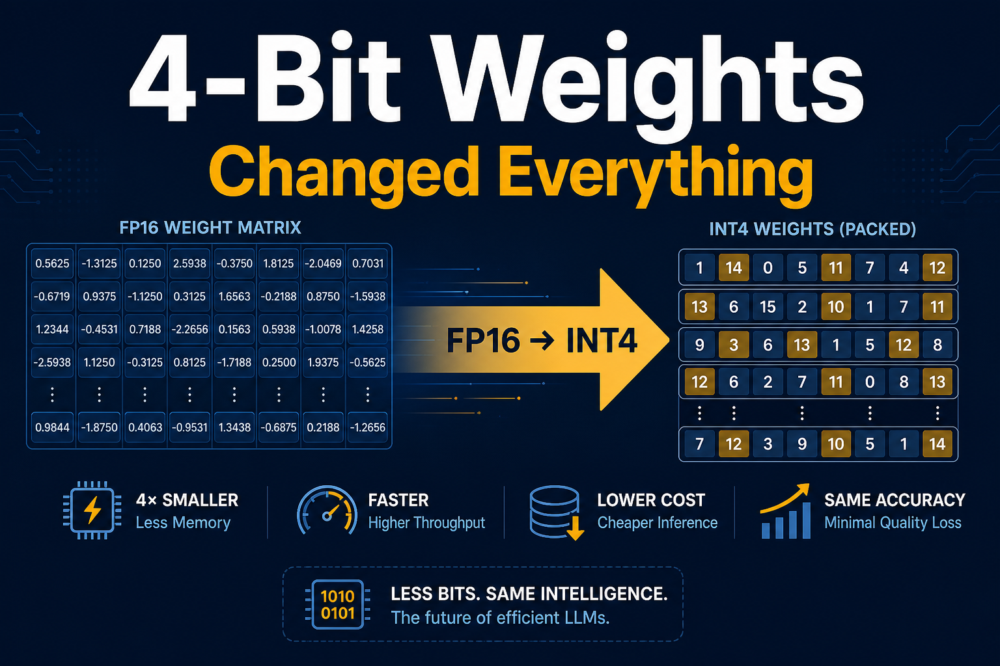
An 8B model in FP16 needs ~16 GB just for weights.
On a 24 GB MacBook, that leaves almost nothing for the OS, your editor, and the KV cache.
Weight quantization is the highest-leverage change for local Mac inference.
How it works (without copying paper figures)
We store each weight with fewer bits — usually 8, 4, or 2 — plus a tiny scale.
../images/papers/jacob_affine_quant_redraw.png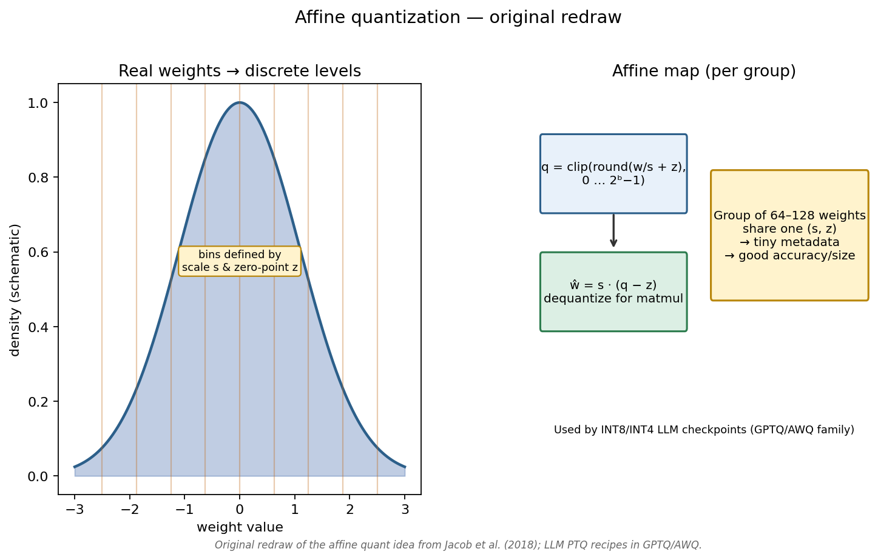
../images/papers/frantar_gptq_redraw.png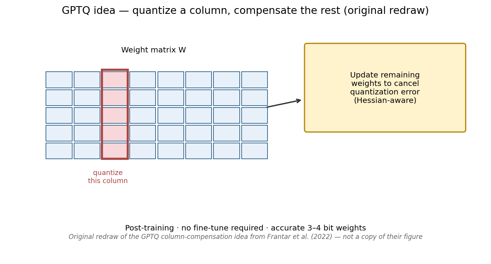
../images/papers/lin_awq_redraw.png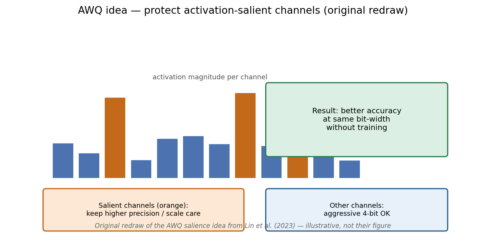
Fun fact: GPTQ was built for 175B-class models that couldn’t fit on one GPU at FP16. The same math now makes 8B models comfortable on a laptop.
Why fewer bits also make decode faster
Each decode step often reads nearly all weights from memory. Fewer bytes per weight → higher tok/s on a bandwidth-bound chip.
../images/papers/williams_roofline_redraw.png
Llama 3.1 8B on Mac M3
- fp16 — 16.3 GB · 5.8 tok/s
- w8 — 9.0 GB · 11.3 tok/s (~1.9×)
- w4 — 5.1 GB · 20.5 tok/s (~3.5×)
- w2 — 3.1 GB · 35.8 tok/s (~6×)
../images/01_weight_quant_llama3-8b.png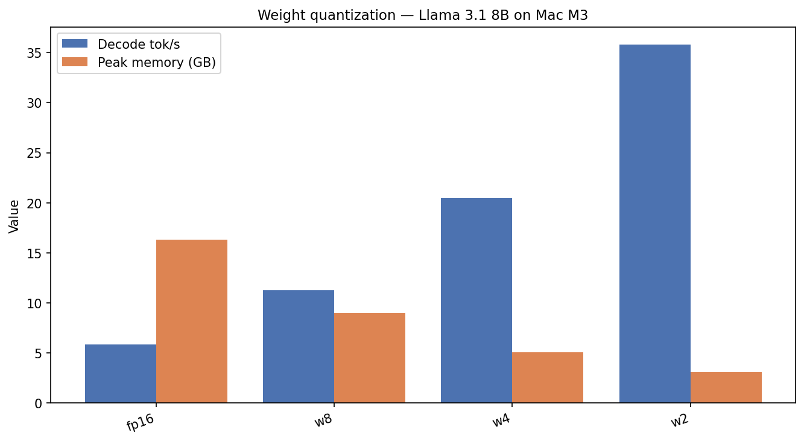
../images/01_pareto_memory_speed.png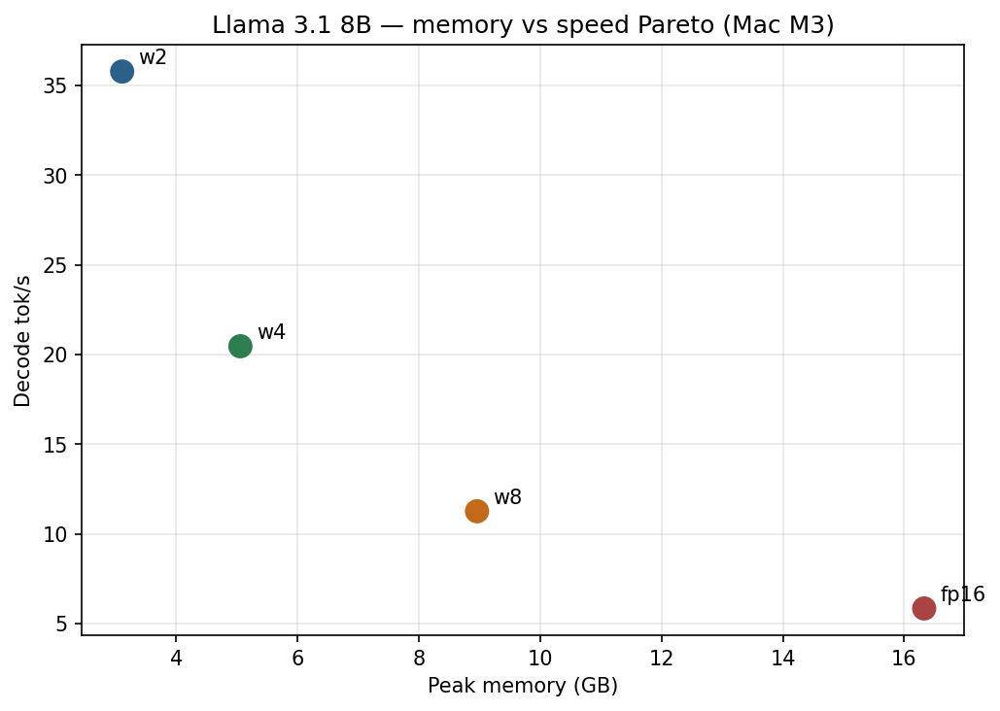
../images/01_speedup_vs_fp16.png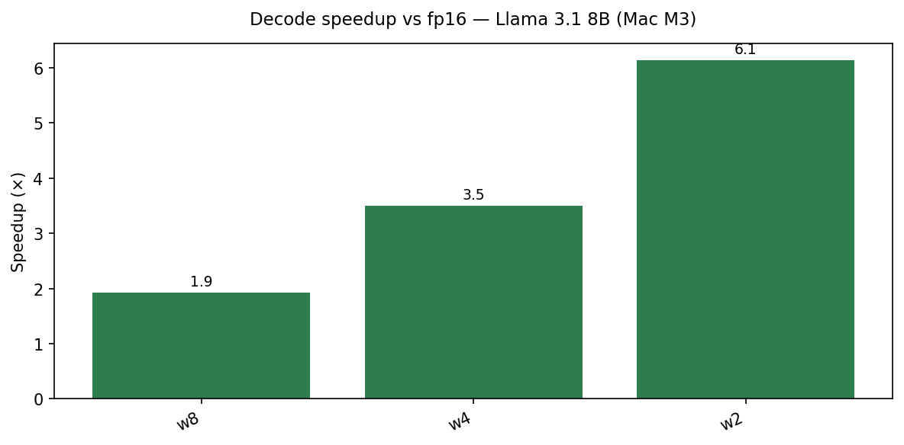
All 14 models (the heatmap)
../images/01_heatmap_tps.png
../images/01_heatmap_memory.png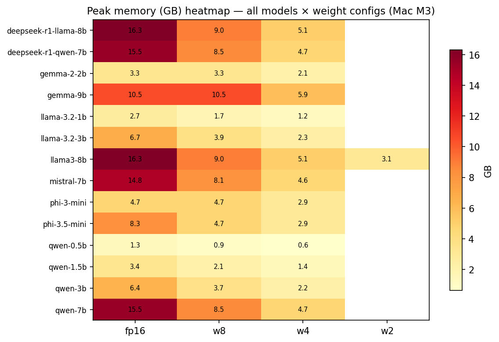
../images/01_speedup_all_models.png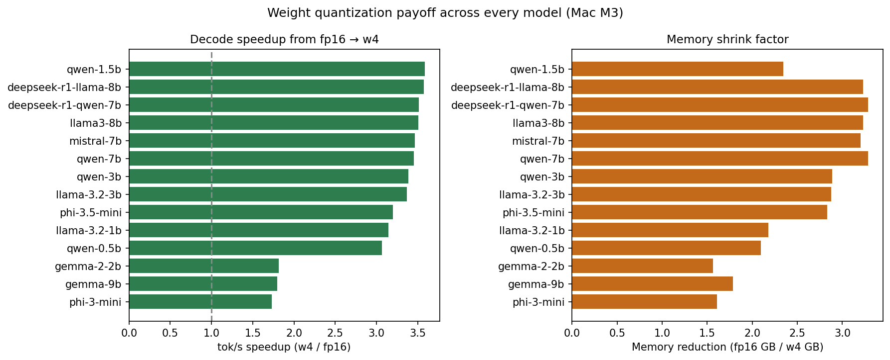
M3 vs M5 Max
Same w4 checkpoints. Different silicon.
- Llama 8B w4: 20.5 → 112 tok/s
- Qwen 0.5B w4: 215 → 581 tok/s
../images/01_m3_vs_m5_w4.png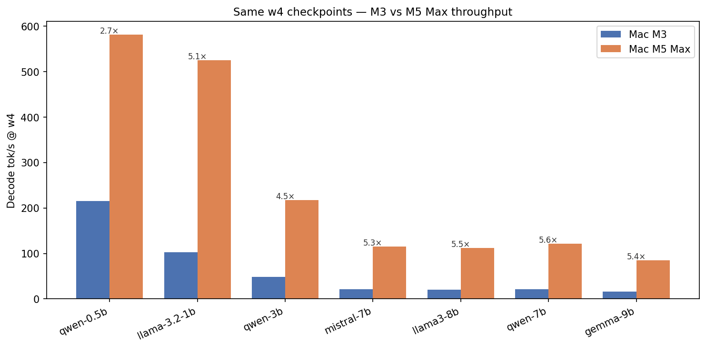
../images/01_llama_m3_m5_all_bits.png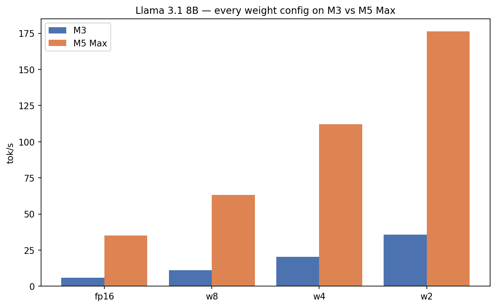
What you should actually run
- 16 GB Mac — 3B–7B @ w4
- 24 GB Mac — 8B @ w4 as daily driver
- Skip FP16 8B as your everyday chat config
Reproduce: ./scripts/run_article.sh 1 "Mac M3"
Repo: LLM-Inference
← Part 1 · Next → Part 3: KV Cache